Gardens by the Bay is a nature park spanning 250 acres of reclaimed land in the Central Region of Singapore, adjacent to the Marina Reservoir.
First announced by the Prime Minister, Lee Hsien Loong, at the National Day Rally in 2005 and, after an international competition for the design in 2006 (attracting more than 70 entries submitted by 170 firms from 24 countries), two British firms were awarded the contracts.
Being one of the popular tourist attractions in Singapore, the park received 6.4 million visitors in 2014, while reaching its 20 millionth visitor mark in November 2015.
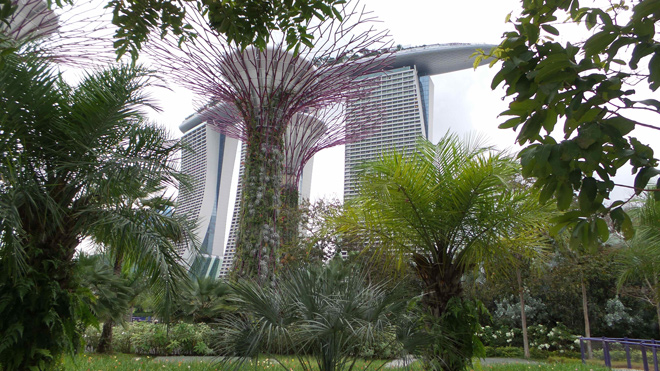
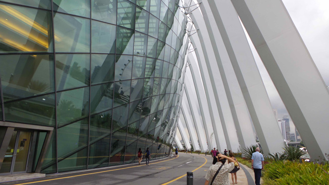
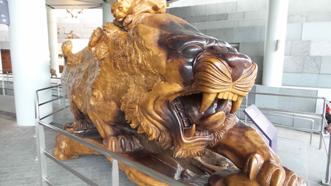
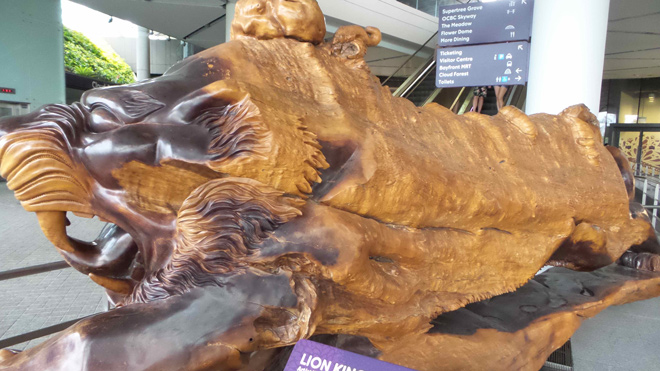
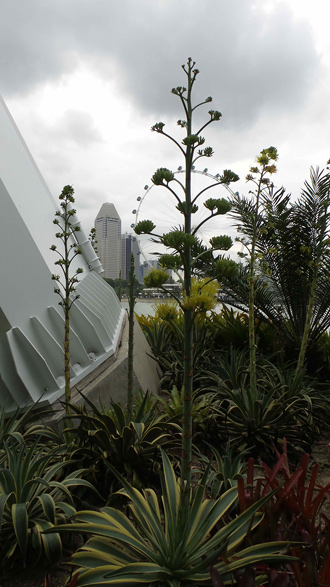
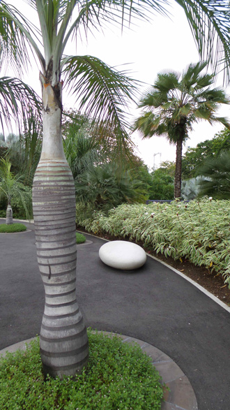
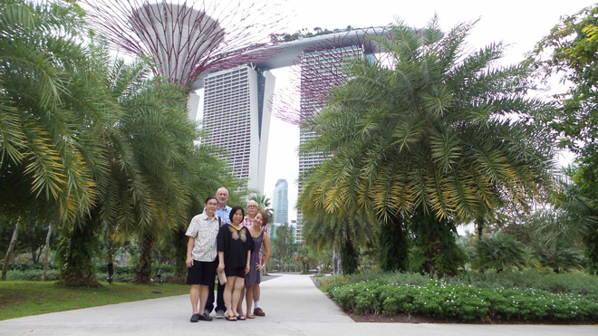
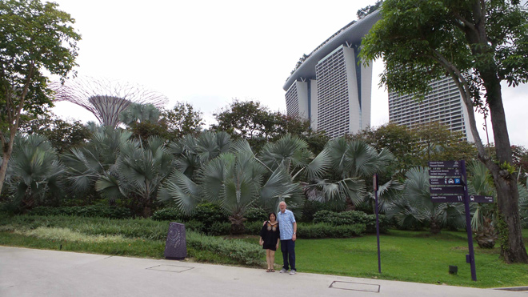
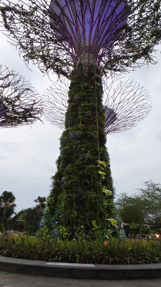
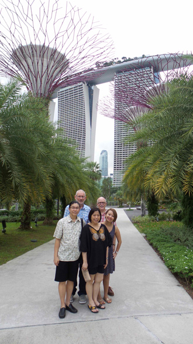
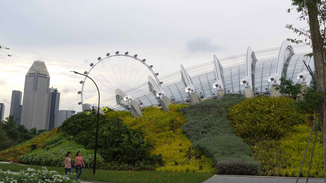